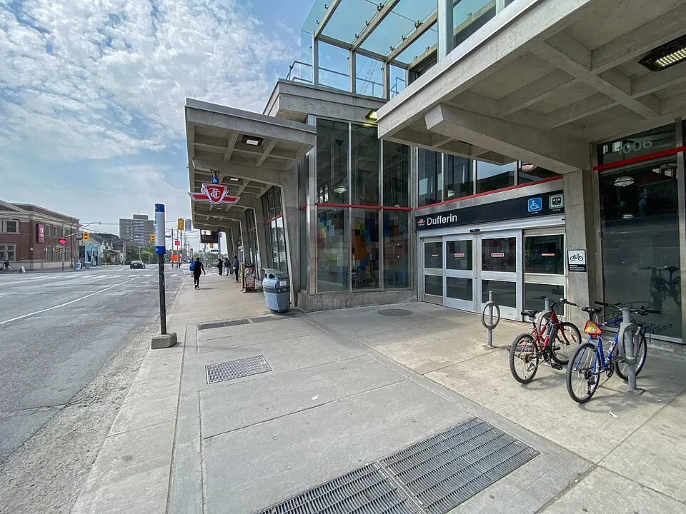

Signal
SignalStation atlas / Dufferin
Station history
Dufferin


Station history
Passenger trains began serving Dufferin on the original Bloor–Danforth subway between Keele and Woodbine.
The public art design for Dufferin used photographs of the station and its neighbourhood as the basis for large, pixelated images.
A new exit on Russett Avenue opened to passengers.
Three elevators entered service as part of the station modernization.